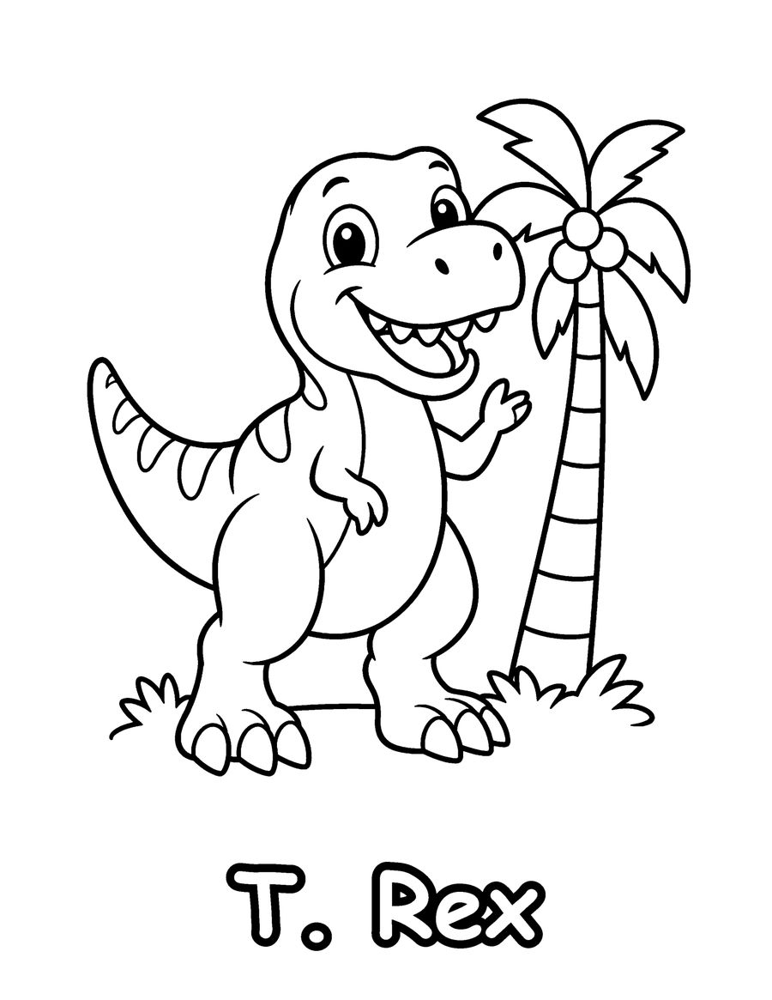
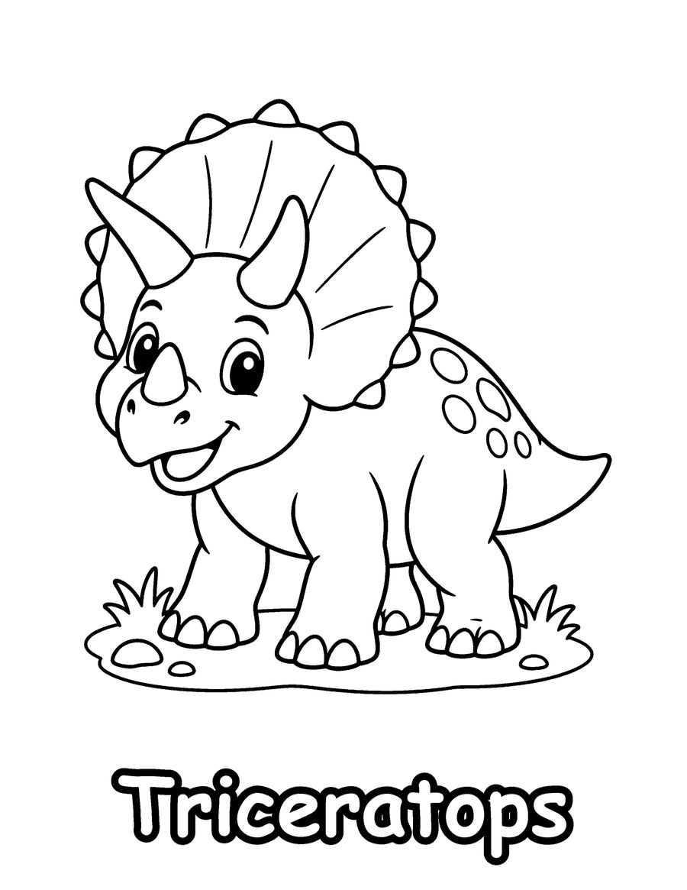
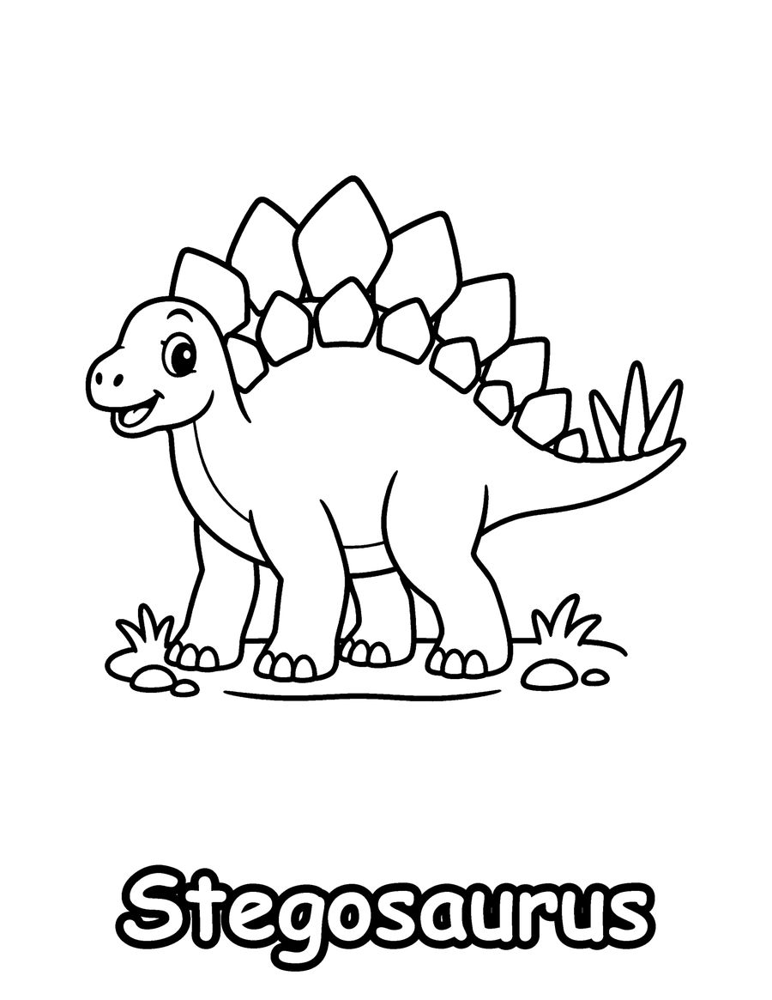

Kids who love dinosaurs can start with these free dinosaur coloring pages: a T. rex, a Triceratops and a Stegosaurus. They come from Dinosaur Friends, a coloring book of 40 cute, friendly dinosaurs for ages 3 to 6, each with its real name so children can learn to recognize them.
The pages use thick outlines and large areas that are easy for little hands. While your child colors, talk about the name. Triceratops means three-horned face, which is easy to see in the drawing, and Stegosaurus is known for the plates along its back. Young dinosaur fans often like to line up the finished pages and sort them into big and small, plant eaters and meat eaters. The pages also suit a dinosaur birthday party, a preschool dinosaur week or a quiet afternoon at home. Print on US Letter paper at 100% scale and use crayons or washable markers. The complete book has 40 named dinosaurs and a dino picnic.
Your 3 free coloring pages

Triceratops
Download free page (PDF)
Stegosaurus
Download free page (PDF)Printing tips
- Print at 100% scale on US Letter (8.5 x 11 in) paper. For A4, choose “Fit to page”.
- Use heavier paper (65 lb / 120 gsm or more) if you color with markers, so ink does not bleed through.
- Download the PDF first, then print from your PDF viewer for the sharpest lines.
Get all 40 pages
These 3 pages are a taste of Dinosaur Friends (Kids 3-6). The full coloring book has 40 pages, ready to print or color in a book.
More free coloring pages

Free Prehistoric Sea Monster Coloring Pages
Kids 6-12

Free Animal Coloring Pages for Preschoolers
Kids 3-6

Free What Animals Eat Coloring Pages
Kids 3-6

Free ABC Animal Coloring Pages
Kids 3-6